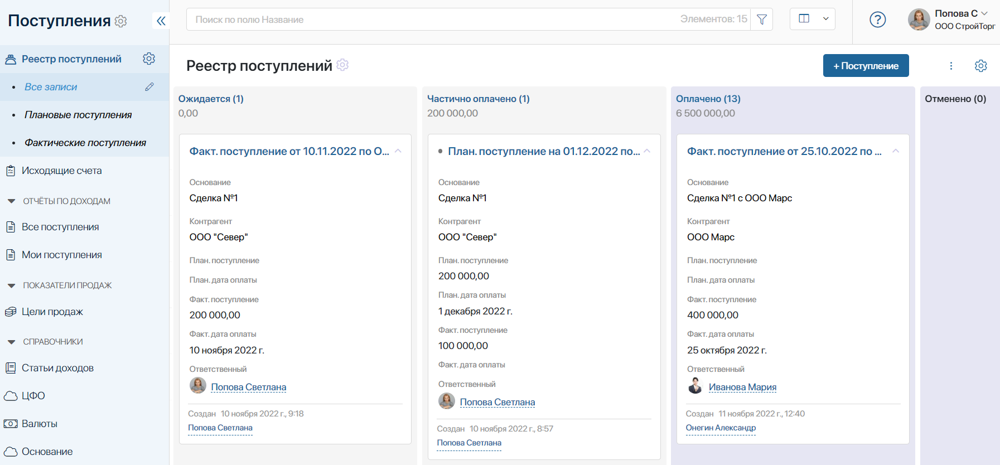
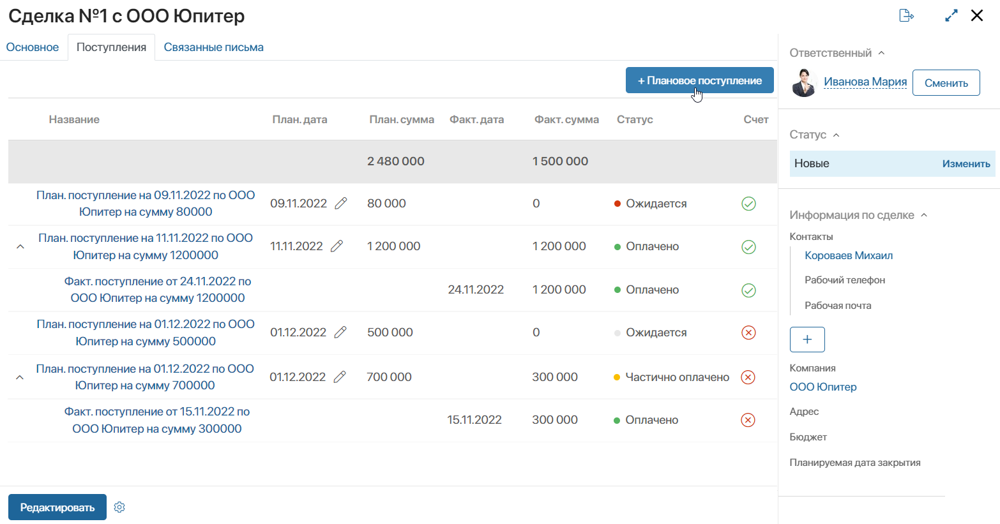
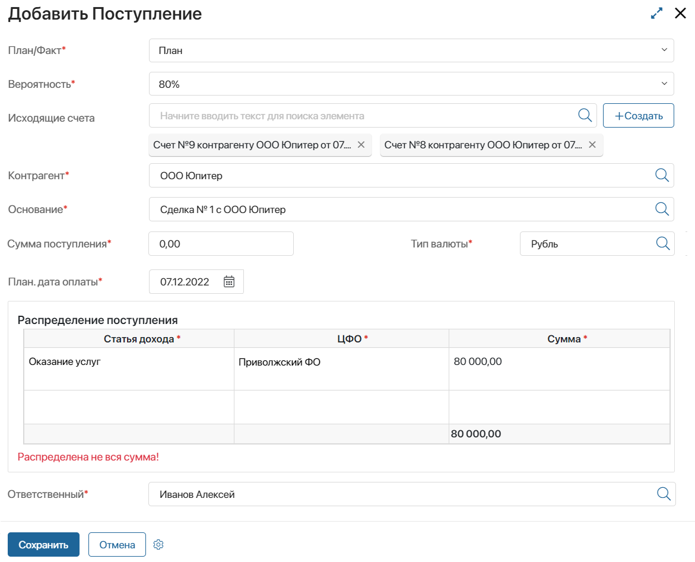
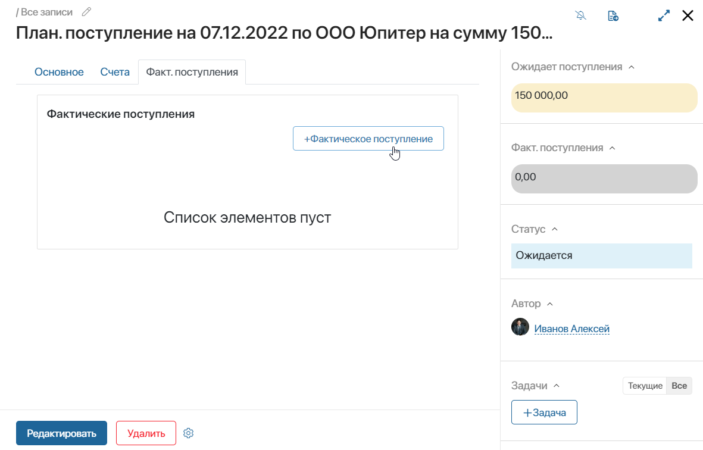
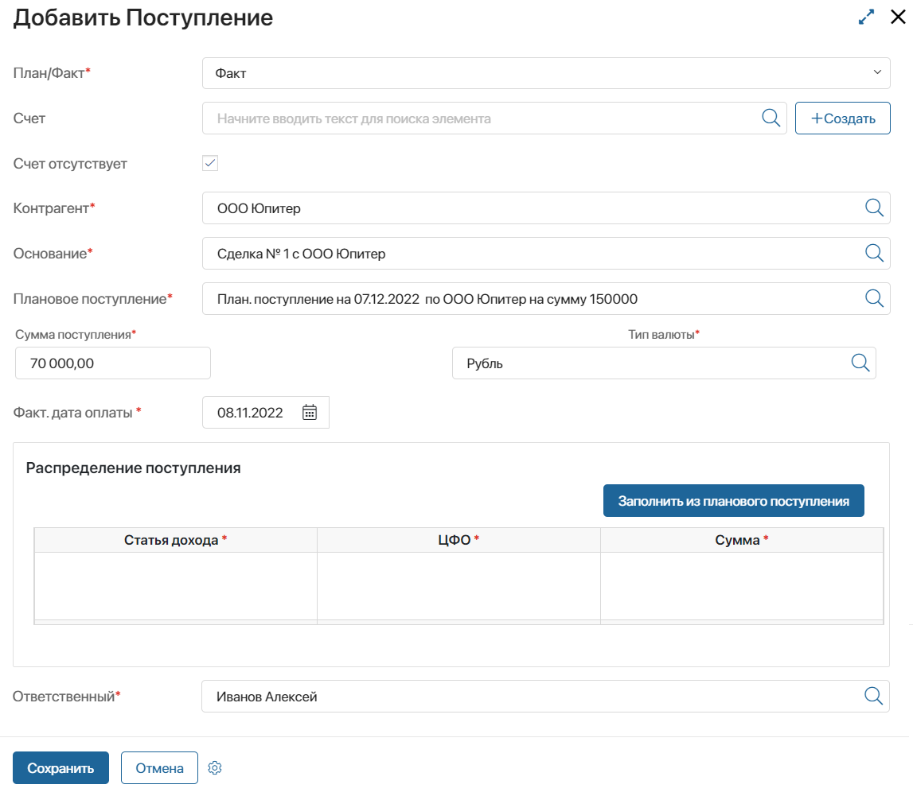
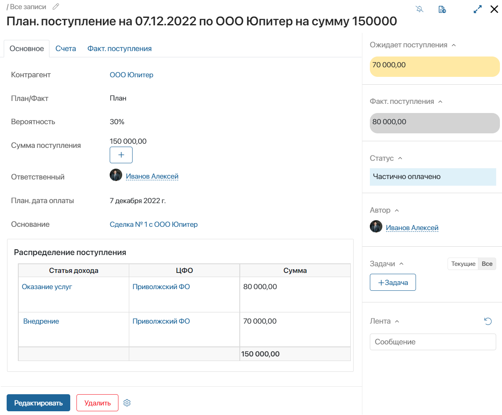
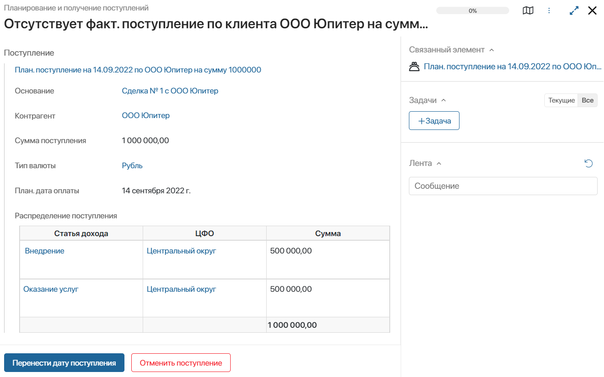
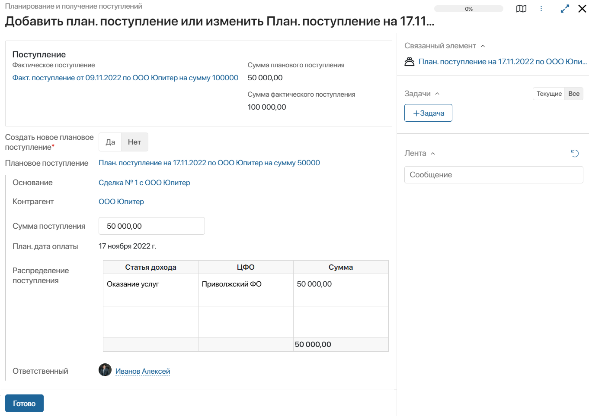

В приложении Реестр поступлений хранятся все запланированные и поступившие платежи, созданные по элементам приложений-оснований, например, по сделкам или договорам.
С помощью настроенного в приложении иерархического справочника все платежи отсортированы по папкам:
- Плановые поступления — запланированные поступления от клиентов. Создаются менеджером и используются для отслеживания личных целей продаж;
- Фактические поступления — поступления, добавленные при частичной или полной оплате суммы платежа. Они используются для построения отчётов по доходам и анализа работы отдела продаж;
- Все поступления — все созданные записи плановых и фактических поступлений.
Отображение поступлений
По умолчанию все поступления отображаются в виде таблицы, в которой указаны: основание поступления, сумма, дата оплаты и ответственный менеджер. Вы можете настроить отображение таблицы и добавить колонки или изменить параметры сортировки.
Отображать поступления можно и в виде плиток и канбан-доски, в которой нагляднее показаны статусы каждой записи:
- Ожидается — по поступлению ожидается оплата;
- Частично оплачено — по поступлению внесена неполная сумма;
- Оплачено — клиент внёс полную суммы оплаты;
- Отменено — отмененный плановый платёж, для которого не было создано фактическое поступление до планируемой даты оплаты.
Пользователи, входящие в группу Администраторы, могут редактировать и добавлять новые статусы для поступлений, а также включить опцию изменения статуса вручную с карточки поступления. Подробнее об этом читайте в статье «Поле “Статус”».

Создание планового поступления
- Запланировать поступление от контрагента можно двумя способами:
- Перейдите на страницу приложения Реестр поступлений и нажмите кнопку +Поступление.
- Откройте карточку элемента-основания и нажмите кнопку +Плановое поступление

- В открывшемся окне заполните поля:

- План/Факт* — из выпадающего списка выберите значение План. На форме появятся дополнительные поля;
- Вероятность* — укажите вероятность поступления платежа от клиента в процентах;
- Исходящие счета — нажмите на значок лупы и выберите запись из приложения Исходящие счета. Или нажмите +Создать, чтобы добавить новый элемент приложения. В поле можно указать несколько счетов или оставить его пустым и добавить счёт позже при создании фактического поступления;
- Контрагент* — нажмите на значок лупы и выберите запись о контрагенте из приложения Компании;
- Основание* — нажмите на значок лупы и укажите элемент приложения-основания, по которому создаёте поступление;
- Сумма поступления* — введите сумму платежа от клиента;
- Тип валюты* — в поле автоматически указывается валюта по умолчанию, установленная в настройках раздела. Значение можно отредактировать, выбрав запись из приложения Валюты;
- План. дата оплаты* — укажите, когда планируется поступление денежных средств от клиента;
- Распределение поступления — заполните информацию о платеже в столбцах таблицы. Нажмите на значок лупы в столбцах Статья дохода* и ЦФО* и выберите записи из этих справочников. Затем заполните поле Сумма*. Занести в таблицу необходимо всю сумму поступления. При этом одно плановое поступление можно распределить по нескольким статьям дохода и центрам финансовой ответственности;
- Ответственный* — укажите ответственного за поступление. По умолчанию установлен текущий пользователь.
- Нажмите Сохранить.
Созданный элемент отобразится в приложении Реестр поступлений со статусом Ожидается.
Также ответственный менеджер получит уведомление о запуске процесса Планирование и получение поступлений. В ходе процесса проверяется, что для поступления создан фактический платёж и счёт. Подробнее об этом читайте в подразделе «Процесс обработки поступления».
Создание фактического поступления
Фактическое поступление привязывается к плановому платежу после того, как клиент внесёт оплату.
- Добавить фактическое поступление можно двумя способами:
- Перейдите на страницу приложения Реестр поступлений и нажмите кнопку +Поступление.
- Откройте карточку планового поступления, перейдите на вкладку Факт. поступления и нажмите кнопку +Фактическое поступление.

- Открывшаяся форма похожа на форму создания планового поступления. В ней необходимо заполнить данные о фактическом поступлении:

- В поле План/Факт* выберите значение Факт. Если платёж создаётся из карточки планового поступления, поле заполнится автоматически;
- В поле Счет нажмите на значок лупы и выберите запись из приложения Исходящие счета или добавьте новый элемент, нажав на кнопку +Создать;
- Если счёт ещё не выставлен клиенту, отметьте флажком поле Счет отсутствует. В этом случае данные о платеже необходимо заполнить вручную;
- В поле Факт. дата оплаты* автоматически указывается текущее число. Вы можете отредактировать дату;
- Заполните столбцы в таблице Распределение поступления. Если фактический внесённый платёж, его статья дохода и ЦФО совпадают с данными, указанными при планировании поступления, нажмите кнопку Заполнить из планового поступления.
- В поле Ответственный* автоматически указывается текущий пользователь. Вы можете изменить ответственного.
- Нажмите Сохранить.
Созданный элемент отобразится в приложении Реестр поступлений, а также в карточке связанного планового поступления.
Менеджер, создавший фактическое поступление, получит оповещение о внесении частичной или полной запланированной суммы.
В зависимости от суммы, внесённой контрагентом и распределённой менеджером, фактическое поступление будет иметь статус Частично оплачено или Оплачено. Его можно увидеть в реестре поступлений, а также на боковой панели привязанного планового поступления. 
Редактирование планового поступления
Пользователи с правами доступа на редактирование могут изменять параметры поступлений. Для этого необходимо открыть карточку поступления и нажать кнопку Редактировать.
Процесс обработки поступления
При создании планового поступления запускается экземпляр преднастроенного процесса Планирование и получение поступлений. В его ходе ответственный за поступление сотрудник будет получать следующие задачи и оповещения в #ленту:
- Уведомление о запуске экземпляра процесса.
- Если на запланированную дату поступления не создан фактический платёж, то сотрудник получит задачу контроля. Он сможет изменить дату поступления или отменить его.

- Уведомление о полной или частичной оплате поступления при создании фактического платежа.
- Если сумма фактического платежа превышает запланированную, ответственный получает задачу изменения планового поступления или создания нового.
